Un seul chiffre pour savoir où vous en êtes.
Beaucoup d'apps suivent le sport d'un côté et l'alimentation de l'autre. Nutri-Fit fait le calcul pour vous, par jour, par semaine ou par mois.
Votre journal alimentaire.
Votre dépense estimée, calories actives d'Apple Santé comprises si vous l'autorisez.
Déficit ou surplus estimé, en kilocalories.
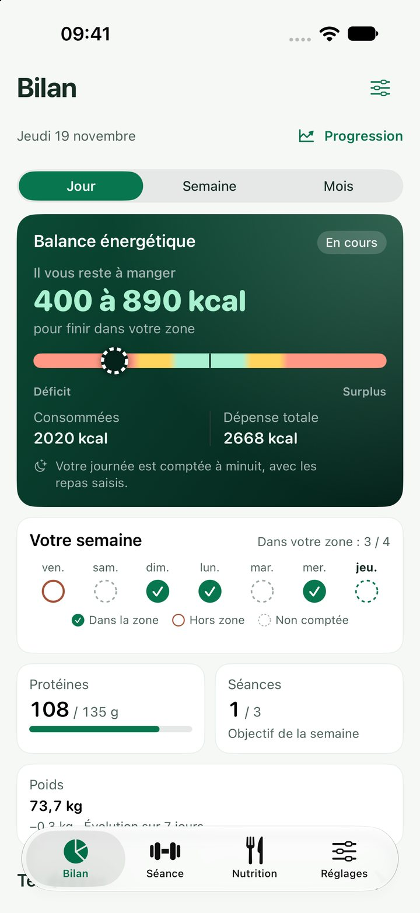
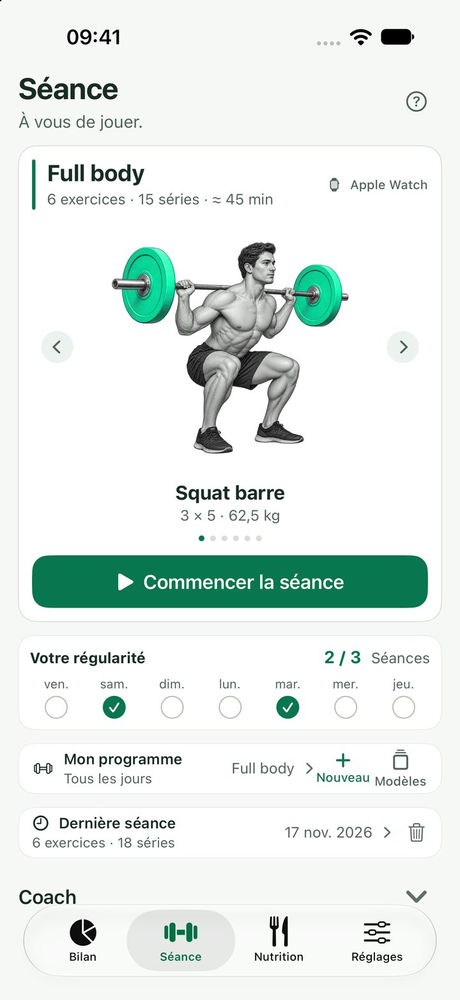
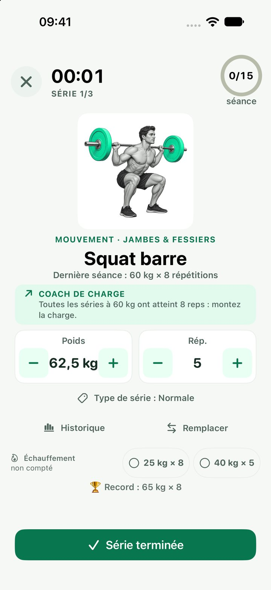
Des séances guidées, série après série.
Partez d'un programme prêt à l'emploi ou du vôtre, puis laissez-vous porter.
- Des programmes prêts à l'emploi. Full body débutant, Push · Pull · Legs, Haut · Bas, Split 3 jours en prise de masse ou en sèche, Force 5×5 et Maison sans matériel.
- La dernière séance sous les yeux. Charge et répétitions de la fois précédente sont rappelées, et s'ajustent d'une touche.
- Un minuteur de repos qui vous suit. Il reste visible sur l'écran verrouillé et sur l'Apple Watch pendant que vous récupérez.
- Chaque exercice illustré. Vous savez toujours quel mouvement vient ensuite.
- Vos records, gardés pour vous. Ils font partie de la version gratuite.
- Un résumé à la fin. Ce que vous venez de faire, comparé à la séance précédente.
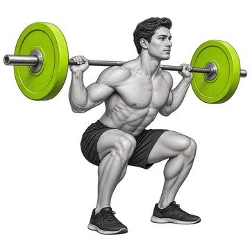
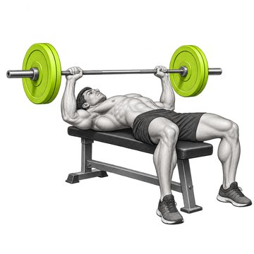
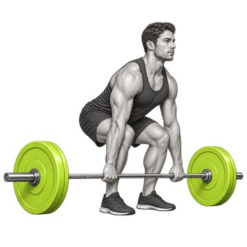
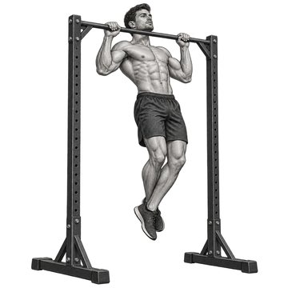
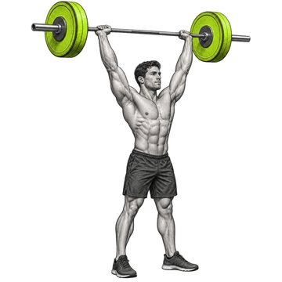
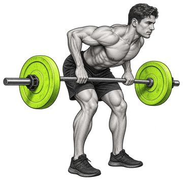
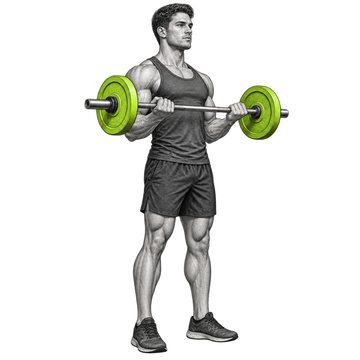
Un journal alimentaire qui va vite.
Noter un repas ne devrait pas prendre plus de temps que de le manger.
- Scannez un code-barres. Les valeurs nutritionnelles viennent de la base ouverte Open Food Facts.
- Un catalogue intégré. Les aliments courants sont dans l'app, illustrés, disponibles sans connexion.
- Vos aliments récents à portée de main. Ce que vous mangez souvent se rajoute en quelques touches.
- Une zone plutôt qu'un chiffre. Votre objectif devient une fourchette de calories, et l'app vous dit ce qu'il reste à manger pour finir dedans. Protéines, glucides et lipides, hydratation et poids sont suivis à côté.
- Apple Santé, si vous le souhaitez. Séances, repas, eau et pesées peuvent y être enregistrés.
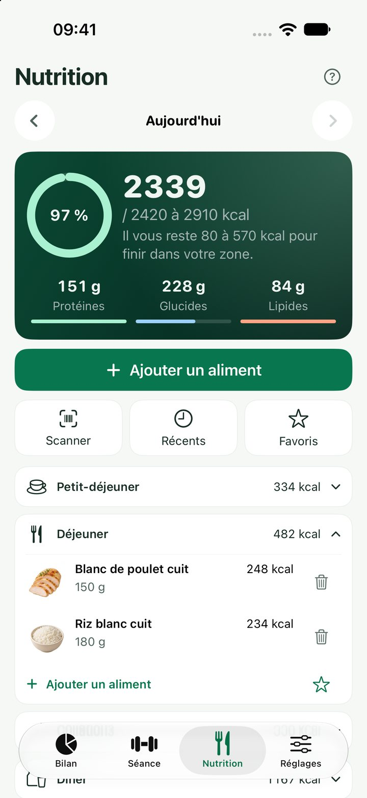
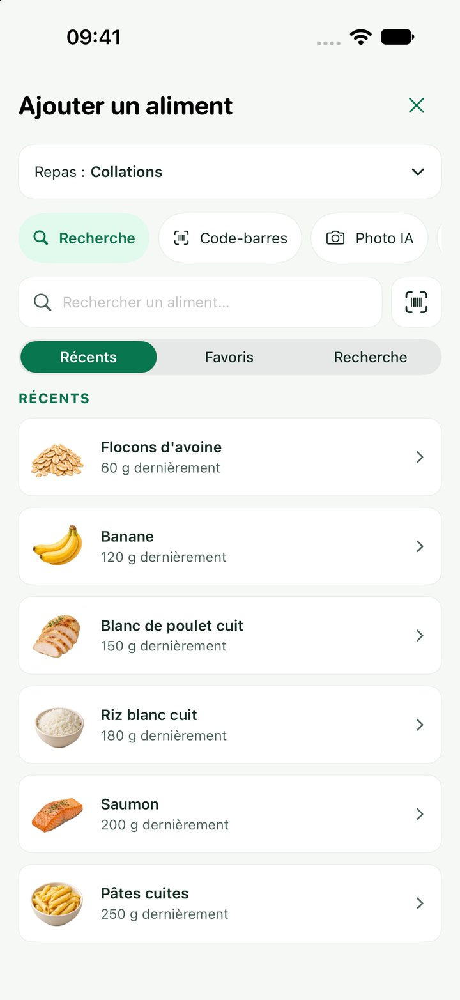
Sous vos yeux, sans ouvrir l'app.
Votre balance et votre séance du jour s'installent là où vous regardez déjà.
Apple Watch
Une app dédiée pour suivre la séance au poignet, et une complication « Bilan Nutri-Fit » pour vos cadrans.
Widgets
« Balance du jour » et « Séance du jour », sur l'écran d'accueil comme sur l'écran verrouillé.
Activité en direct
Le décompte du repos et l'exercice à suivre restent affichés sur l'écran verrouillé pendant la séance.
Rappels facultatifs
Séance du jour, pesée hebdomadaire, bilan du soir : chacun s'active séparément, aucun ne l'est par défaut.
Bilan masqué sur demande
Un réglage masque votre bilan calorique dans les widgets de l'écran verrouillé.
Six langues
Français, anglais, espagnol, italien, allemand et portugais.
Vos données restent à vous.
Pas de compte à créer, pas de publicité, pas de suivi publicitaire.
Sur votre appareil
Repas, séances, programmes et pesées sont enregistrés sur votre iPhone, pas sur un serveur Nutri-Fit.
Export et sauvegardes
Exportez vos données, y compris en CSV pour un tableur, et restaurez une sauvegarde locale quand vous le voulez. C'est gratuit.
Statistiques facultatives
Le partage de statistiques d'usage et de diagnostics est désactivé par défaut. Rien ne part sans votre accord, et un réglage permet de changer d'avis.
Le détail, prestataires compris, est dans la politique de confidentialité.
Questions fréquentes
Nutri-Fit est-elle gratuite ?
Oui. Vos séances, votre journal alimentaire, la balance, l'Apple Watch, vos records et l'export de vos données sont gratuits, sans limite de temps. Nutri-Fit Premium est un abonnement facultatif qui ajoute les analyses : coach quotidien complet, bilan de la semaine, courbes et plateaux, équilibre musculaire, ajout d'un repas par photo ou par phrase et repas favoris.
Comment la balance est-elle calculée ?
C'est la différence entre ce que vous avez mangé, d'après votre journal, et votre dépense estimée de la journée. La dépense tient compte de votre profil et, si vous l'autorisez, des calories actives lues dans Apple Santé. Pendant la journée, le Bilan l'indique « En cours » et vous dit ce qu'il vous reste à manger pour finir dans votre zone. À minuit, la journée est comptée automatiquement avec les repas saisis, sans rien à confirmer ; une journée sans repas n'est pas comptée. Il s'agit d'une estimation, pas d'une mesure médicale.
D'où viennent les valeurs nutritionnelles ?
D'un catalogue intégré à l'app pour les aliments courants, et de la base ouverte Open Food Facts pour les recherches en ligne et les codes-barres. Sans connexion, le catalogue intégré et vos aliments récents restent disponibles.
Ai-je besoin d'une Apple Watch ?
Non. Tout fonctionne sur l'iPhone seul. La montre ajoute le suivi de la séance au poignet et une complication pour vos cadrans.
Nutri-Fit existe-t-elle sur iPad ou sur Mac ?
Nutri-Fit est conçue pour l'iPhone, avec iOS 17 ou une version ultérieure, et pour l'Apple Watch.
J'ai changé d'iPhone, comment retrouver Premium ?
Ouvrez les Réglages de Nutri-Fit, puis Nutri-Fit Premium, et touchez Restaurer mes achats. L'abonnement est rattaché à votre compte Apple.
Comment résilier l'abonnement ?
Depuis l'écran Nutri-Fit Premium, touchez Gérer mon abonnement, ou passez par l'app Réglages de l'iPhone, votre nom, puis Abonnements. Supprimer l'app ne résilie pas l'abonnement.
Est-ce que mes données partent quelque part ?
Vos repas, séances et pesées restent sur votre appareil. Les recherches d'aliments et les codes-barres sont envoyés à Open Food Facts. L'achat et l'état de l'abonnement sont vérifiés par RevenueCat avec un identifiant aléatoire. Et seulement si vous l'acceptez, Nutri-Fit envoie des statistiques d'usage via PostHog et des diagnostics de plantage via Sentry, tous deux hébergés dans l'Union européenne, sans le contenu de vos repas, de vos séances ni de vos mesures. Le détail est dans la politique de confidentialité.
Comment sauvegarder ou exporter mes données ?
Dans Réglages, Données et confidentialité, puis Sauvegarde & restauration : vous pouvez exporter une copie de vos données, les exporter en CSV pour un tableur, et restaurer une sauvegarde locale.
Nutri-Fit remplace-t-elle un suivi médical ?
Non. Les calories, la dépense et la balance sont des estimations destinées à vous repérer. Pour un objectif de santé, un régime particulier ou une reprise après blessure, demandez l'avis d'un professionnel de santé.
Besoin d'aide ?
Écrivez à abdelhafid.younes@gmail.com.
Pour aller plus vite, précisez votre version d'iOS, votre modèle d'iPhone et ce que vous faisiez au moment du problème.
Votre effort guide votre assiette.
Lancez une première séance, notez un premier repas : la balance fait le reste.
Télécharger sur l'App Store